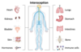

interoception

Definition: Interoception is the collection of senses understanding the internal state of the body. This can be both conscious and unconscious. It encompasses the brain's process of integrating signals relayed from the body into specific subregions—like the brainstem, thalamus, insula, somatosensory, and anterior cingulate cortex—allowing for a nuanced representation of the physiological state of the body. This is important for maintaining homeostatic conditions in the body and, potentially, facilitating self-awareness.Interoceptive signals are projected to the brain via a diversity of neural pathways, in particular from the lamina I of the spinal cord along the spinothalamic pathway and through the projections of the solitary nucleus, that allow for the sensory processing and prediction of internal bodily states. Misrepresentations of internal states, or a disconnect between the body's signals and the brain's interpretation and prediction of those signals, have been suggested to underlie conditions such as anxiety, depression, panic disorder, anorexia nervosa, bulimia nervosa, posttraumatic stress disorder (PTSD), obsessive compulsive disorder (OCD), attention deficit hyperactivity disorder (ADHD), alexithymia, somatic symptom disorder, and illness anxiety disorder.The contemporary definition of interoception is not synonymous with the term "visceroception". Visceroception refers to the perception of bodily signals arising specifically from the viscera: the heart, lungs, stomach, and bladder, along with other internal organs in the trunk of the body. This does not include organs like the brain and skin. Interoception encompasses visceral signaling, but more broadly relates to all physiological tissues that relay a signal to the central nervous system about the current state of the body. Interoceptive signals are transmitted to the brain via multiple pathways including the lamina I spinothalamic pathway, the classical viscerosensory pathway, the vagus nerve and glossopharyngeal nerve, chemosensory pathways in the blood, and somatosensory pathways from the skin.
Source: Wikipedia
Wikipedia Page (Something wrong with this association? Let us know.)
Wikidata Page (Something wrong with this association? Let us know.)